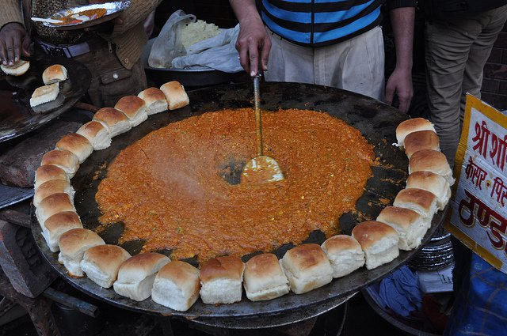
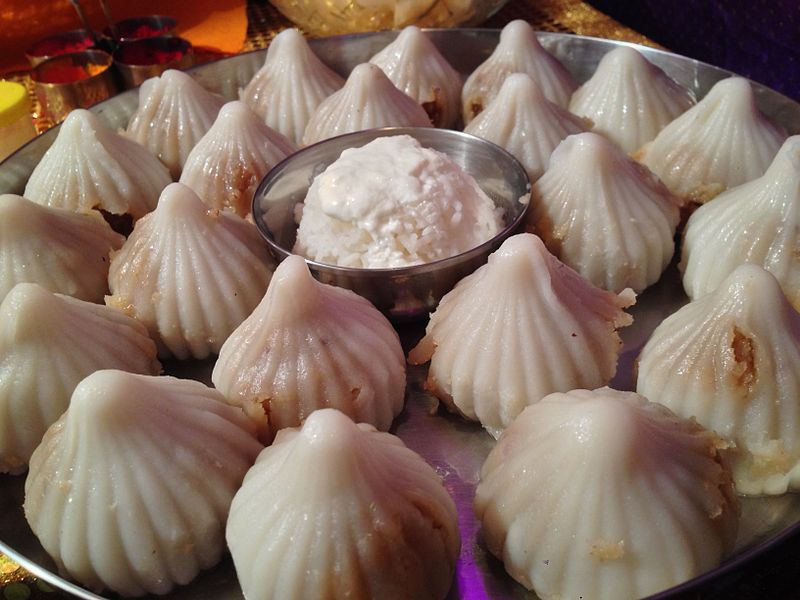
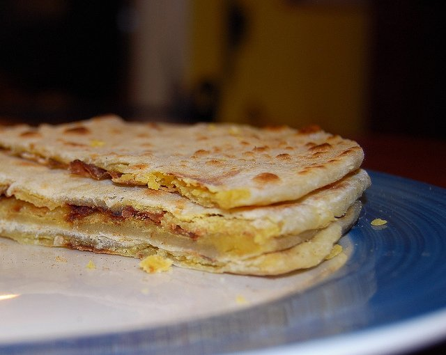
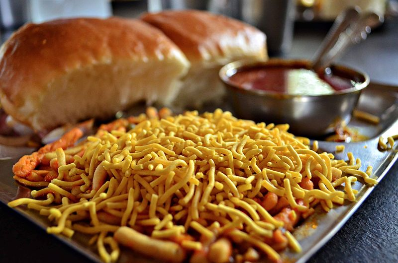

| HOME | NATIONAL PARKS IN MAHARASHTRA | FORTS IN MHARASHTRA | ANIMALS IN MHARASHTRA | FOOD IN MHARASHTRA | MUSIC IN MHARASHTRA | ART IN MAHARASHTRA | BIRDS IN MAHARASHTRA | LITERATURE IN MAHARASHTRA |
|  |
PAV BHAJIAmchi Maharashtra food is incomplete without this dish which has come to be synonymous to the state! Fresh and thick slices of bread, smothered in butter served with a delicious mix of moderately spiced vegetables. This lip-smacking dish has won the heart of every Indian! |
|  |
MODAKModak is one of the most famous sweet found in Maharashtra and is extensively eaten during the Ganesh Chaturthi Festival all around the state. The sweet filling on the inner part of a modak consists of freshly grated coconut and jaggery while the outer shell is made out of rice flour and is very soft. With time, there have been varied types of modak such as Kesari modak, dark chocolate modak, motichoor modak, paneer modak, dry fruit modak and many more. This sweet is Ganpati's favourite and that is for a very definite reason for sure. |
|  |
PURAN POLIThis delectable food item is a sweet version of the loving parantha. The stuffing is made from jaggery (gur), yellow gram (chana) dal, plain flour, cardamom powder and ghee (clarified butter). It is a popular dish in festive occasions and also can be eaten at any time of the day. A tasty dessert does not need anyone's permission to be eaten! |
|  |
MISAL PAVMisal Pav is quintessentially from Pune and is one of the most popular Maharashtrian breakfast, snack or even brunch. It is a street food popularly found in Mumbai. It has a spicy and tangy lentil curry which is made with moth beans and is served with Pav bread. At times, it is eaten with yoghurt to lessen the spice. Although it is a breakfast food but Maharashtrians enjoy it at time of the day. There are various types of Misal such as Puneri Missal (topped with poha), Nagpuri Missal, Kolhapuri Missal and Mumbai Missal which are very spicy. |